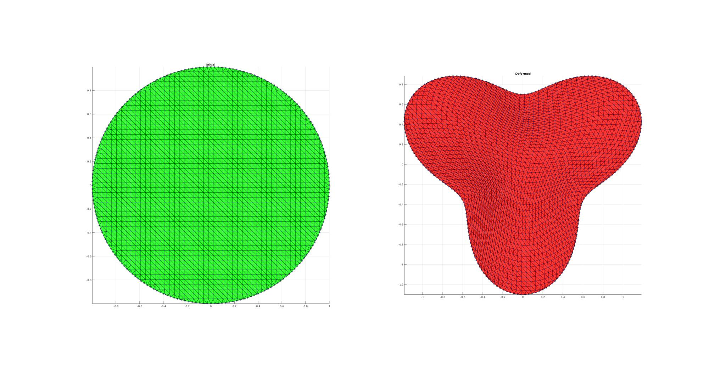
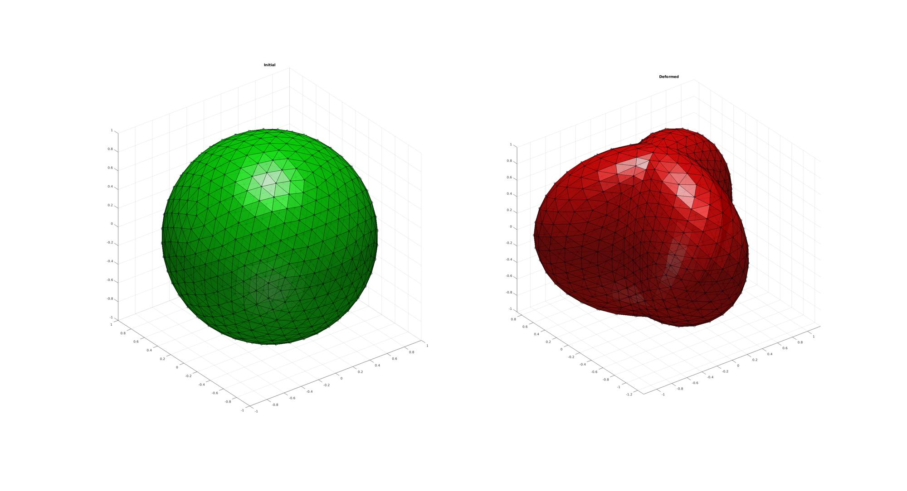
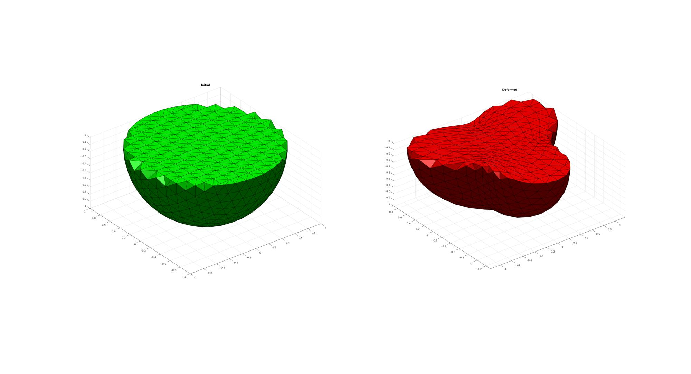

pointSetDistMap
Below is a basic demonstration of the features of the pointSetDistMap function.
Contents
clear; close all; clc; % PLOT SETTINGS markerSize1=5; markerSize2=5; lineWidth=2; fontSize=10; faceAlpha=0.8;
DEFORMING A 2D MESH
SIMULATING A 2D EXAMPLE
interpMethod='pchip'; closeLoopOpt=1; n=200; %P1 t=linspace(0,2*pi,n); t=t(1:end-1); r=ones(size(t)); [x,y] = pol2cart(t,r); P1=[x(:) y(:)]; [P1]=evenlySampleCurve(P1,n,interpMethod,closeLoopOpt); %P2 t=linspace(0,2*pi,n); t=t(1:end-1); r=1+0.3*sin(3*t); [x,y] = pol2cart(t,r); P2=[x(:) y(:)]; [P2]=evenlySampleCurve(P2,n,interpMethod,closeLoopOpt); %P1i np=50; [x,y]=meshgrid(linspace(-1,1,np)); P1i=zeros(numel(x(:)),2); P1i(:,1)=x(:); P1i(:,2)=y(:); [IN,~] = inpolygon(P1i(:,1),P1i(:,2),P1(:,1),P1(:,2)); P1i=P1i(IN(:),:); P1i=[P1i; P1]; P1i=unique(P1i,'rows'); DT = delaunayTriangulation(P1i(:,[1 2])); %P2i Fw=5; [P2i]=pointSetDistMap(P1,P1i,P2,Fw);
PLOTTING RESULTS: Circles are boundary points which should be mapped exactly. Blue points are the initial and mapped points. Tesselation shows connectivity (which may become distorted)
hf1=cFigure; subplot(1,2,1); hold on; title('Initial','FontSize',fontSize); gpatch(DT.ConnectivityList,P1i,'g','k',faceAlpha); plot(P1(:,1),P1(:,2),'ko-','MarkerSize',markerSize1); plot(P1i(:,1),P1i(:,2),'b.','MarkerSize',markerSize2); axisGeom(gca,fontSize); view(2); subplot(1,2,2); hold on; title('Deformed','FontSize',fontSize); gpatch(DT.ConnectivityList,P2i,'r','k',faceAlpha); plot(P2(:,1),P2(:,2),'ko-','MarkerSize',markerSize1); plot(P2i(:,1),P2i(:,2),'b.','MarkerSize',markerSize2); axisGeom(gca,fontSize); view(2); drawnow;
DEFORMING A 3D MESH
SIMULATING A 3D EXAMPLE
%P1 [F,P1,~]=geoSphere(3,1); %P1i np=15; [x,y,z]=meshgrid(linspace(-1,1,np)); P1i=[x(:) y(:) z(:)]; DT = delaunayTriangulation(P1); LI = ~isnan(pointLocation(DT,P1i)); P1i=[P1; P1i(LI,:)]; P1i=unique(P1i,'rows'); DT = delaunayTriangulation(P1i(:,[1 2])); %P2 [PHI,THETA,~] = cart2sph(P1(:,1),P1(:,2),P1(:,3)); R=1+0.3*sin(3*PHI); P2=P1; [P2(:,1),P2(:,2),~]=sph2cart(PHI,THETA,R); %P2i Fw=5; [P2i]=pointSetDistMap(P1,P1i,P2,Fw);
Warning: Duplicate data points have been detected and removed. The Triangulation indices are defined with respect to the unique set of points in delaunayTriangulation.
PLOTTING RESULTS: Circles are boundary points which should be mapped exactly. Blue points are the initial and mapped points. Tesselation shows connectivity (which may become distorted)
hf2=cFigure; subplot(1,2,1); hold on; title('Initial','FontSize',fontSize); gpatch(F,P1,'g','k',faceAlpha); plot3(P1(:,1),P1(:,2),P1(:,3),'ko','MarkerSize',markerSize1); plot3(P1i(:,1),P1i(:,2),P1i(:,3),'b.','MarkerSize',markerSize2); axisGeom(gca,fontSize); camlight('headlight'); subplot(1,2,2); hold on; title('Deformed','FontSize',fontSize); gpatch(F,P2,'r','k',faceAlpha); plot3(P2(:,1),P2(:,2),P2(:,3),'ko','MarkerSize',markerSize1); plot3(P2i(:,1),P2i(:,2),P2i(:,3),'b.','MarkerSize',markerSize2); set(gca,'FontSize',fontSize); axisGeom(gca,fontSize); camlight('headlight'); drawnow;
%Create tesselations for vizualisation V1=[P1; P1i]; V2=[P2; P2i]; [~,ind1,ind2]=unique(V1,'rows'); %remove double points V1=V1(ind1,:); V2=V2(ind1,:); DT1 = delaunayTriangulation(V1); TET=DT1.ConnectivityList; %Create cut Z=V1(:,3); Ztet=mean(Z(TET),2); Ltet=(Ztet<0); %Convert elements of interest to patchable faces [Ft,~]=element2patch(TET(Ltet,:),1:size(TET(Ltet,:),1)); %Only plot outer faces %Get face counts Fs=sort(Ft,2); %Sort so faces with same nodes have the same rows [~,IND_F,IND_F_2]=unique(Fs,'rows'); F_uni=Ft(IND_F,:); numF=size(Fs,1); numFuni=size(F_uni,1); logicColourMatrixEntry=sparse(IND_F_2,1:numF,1,numFuni,numF,numF); F_count=full(sum(logicColourMatrixEntry,2)); Ftu=F_uni(F_count==1,:); %Get outer surfaces hf3=cFigure; subplot(1,2,1); hold on; title('Initial','FontSize',fontSize); gpatch(Ftu,V1,'g'); set(gca,'FontSize',fontSize); axisGeom(gca,fontSize); camlight('headlight'); subplot(1,2,2); hold on; title('Deformed','FontSize',fontSize); gpatch(Ftu,V2,'r'); set(gca,'FontSize',fontSize); axisGeom(gca,fontSize); camlight('headlight'); drawnow;

GIBBON www.gibboncode.org
Kevin Mattheus Moerman, gibbon.toolbox@gmail.com
GIBBON footer text
License: https://github.com/gibbonCode/GIBBON/blob/master/LICENSE
GIBBON: The Geometry and Image-based Bioengineering add-On. A toolbox for image segmentation, image-based modeling, meshing, and finite element analysis.
Copyright (C) 2006-2021 Kevin Mattheus Moerman and the GIBBON contributors
This program is free software: you can redistribute it and/or modify it under the terms of the GNU General Public License as published by the Free Software Foundation, either version 3 of the License, or (at your option) any later version.
This program is distributed in the hope that it will be useful, but WITHOUT ANY WARRANTY; without even the implied warranty of MERCHANTABILITY or FITNESS FOR A PARTICULAR PURPOSE. See the GNU General Public License for more details.
You should have received a copy of the GNU General Public License along with this program. If not, see http://www.gnu.org/licenses/.